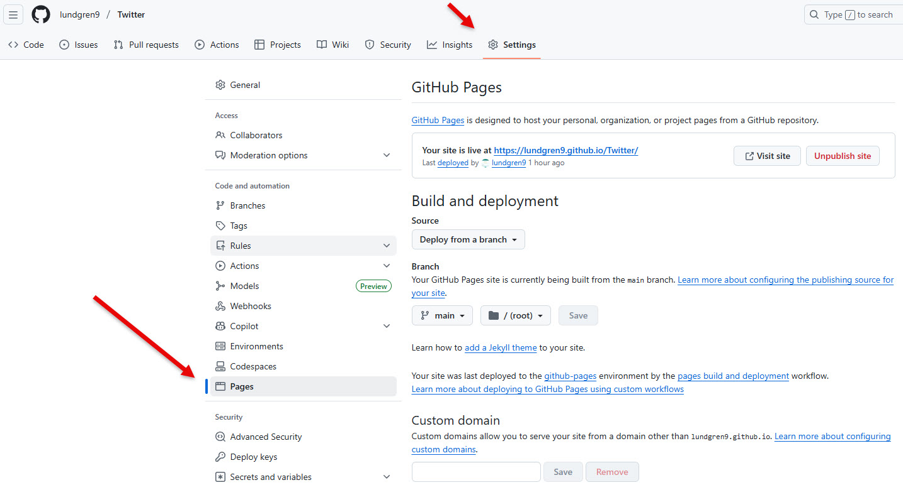
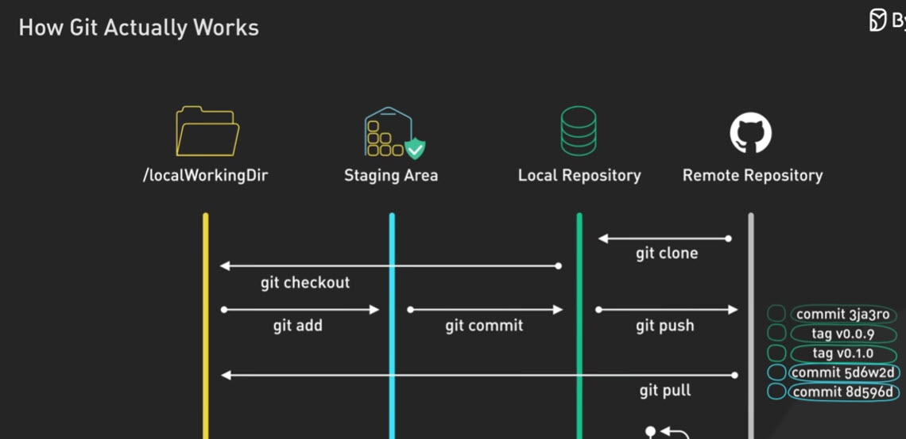
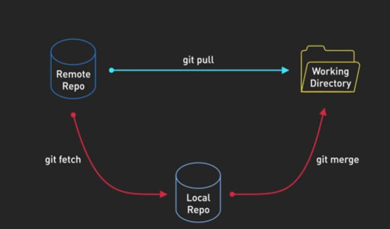

📚 Versionshistorik
Bjerreds Saltsjöbad - Bildcollage
← Tillbaka till programmet🏷️ Tillgängliga versioner
Här kan du se och testa olika versioner av programmet. Varje version är bevarad som en separat mapp på GitHub Pages.
v2.5 Version 2.5 - GitHub Wiki & Dokumentation ✓ AKTUELL
Släppt: 4 januari 2026
Nyheter:
- 📚 GitHub Wiki med 9 dokumentationssidor
- 📝 Versionschecklista i index.html
- 🌿 Följt Feature Branch Workflow (PR → Merge)
- 🗂️ Backup-mapp v2.5/ för historisk version
v2.4 Version 2.4 - Versionshistorik & Git-guide
Släppt: 4 januari 2026
Nyheter:
- 📚 Ny
versioner.htmlmed komplett Git-dokumentation - 🗂️ Versionsmappar för v1.0, v2.0 och v2.2
- 🎬 Videoresurser om Git och GitHub
- 📖 Harvard-formaterade referenser
v2.2 Version 2.2 - Versionsbadge & GitHub-info
Släppt: 4 januari 2026
Nyheter:
- 🏷️ Versionsbadge som hämtas automatiskt från GitHub API
- 📦 GitHub-info box med Open Source-introduktion
- 📚 Utökad README med Git-dokumentation
v2.0 Version 2.0 - 16 bilder med Lightbox
Släppt: 4 januari 2026
Nyheter:
- 🖼️ Utökad bildbank från 10 till 16 bilder
- 🔍 Lightbox för fullskärmsvisning
- 🔗 "Öppna på X" för att se original-tweet
- 📅 Tooltip med datum vid hover
v1.0 Version 1.0 - Ursprunglig release
Släppt: 3 januari 2026
Funktioner:
- 🖼️ 10 bilder från #Bjerredssaltsjobad
- 🎬 Inbäddad Twitter-video
- ➕ Input-ruta för egna bilder
- 💾 localStorage för sparade bilder
🚀 Hur man skapar en ny version
Här är en steg-för-steg guide för att skapa en ny version av programmet:
Gör dina ändringar
Redigera filerna (HTML, CSS, JavaScript) med de förbättringar du vill göra.
Lägg till ändringar till staging
# Lägg till alla ändrade filergit add .# Eller lägg till specifika filergit add index.html styles.css
Commita ändringarna
git commit -m "v2.4: Beskrivning av vad som ändrats"
Tips: Skriv tydliga commit-meddelanden som beskriver VAD du ändrat och VARFÖR.
Pusha till GitHub
git push origin main
Skapa en tag för versionen
# Skapa annoterad tag med beskrivninggit tag -a v2.4 -m "Version 2.4: Kort beskrivning"# Pusha taggen till GitHubgit push origin v2.4
Skapa Release på GitHub
- Gå till github.com/.../releases/new
- Välj din nya tag (t.ex. v2.4)
- Skriv release title och release notes
- Klicka "Publish release"
(Valfritt) Skapa versionsmapp för arkivering
Om du vill att användare ska kunna köra äldre versioner direkt i webbläsaren via GitHub Pages, skapa en separat mapp:
# Skapa mapp för versionenmkdir v2.4# VIKTIGT: I PowerShell, använd Out-File med UTF-8 för svenska tecken!git show v2.4:index.html | Out-File -Encoding utf8 -FilePath v2.4/index.htmlgit show v2.4:styles.css | Out-File -Encoding utf8 -FilePath v2.4/styles.cssgit show v2.4:javaScript.js | Out-File -Encoding utf8 -FilePath v2.4/javaScript.js
⚠️ Varning om teckenkodning
Använd INTE vanlig omdirigering (>) i PowerShell för filer med å, ä, ö:
# ❌ FEL - ger Ã¥, ä, ö istället för å, ä, ögit show v2.4:index.html > v2.4/index.html# ✅ RÄTT - bevarar svenska teckengit show v2.4:index.html | Out-File -Encoding utf8 -FilePath v2.4/index.html
Vad gör kommandot "git show"?
git show visar innehållet i Git-objekt (commits, tags, filer). Med syntaxen tag:filnamn kan du se hur en fil såg ut vid en specifik version:
# Visa hur index.html såg ut i v2.0git show v2.0:index.html# Visa information om en taggit show v2.0# Visa senaste commitgit show HEAD# Visa en specifik commitgit show abc1234
✅ Klart!
Nu är din nya version publicerad och tillgänglig på GitHub Pages. Programmet visar automatiskt den nya versionen via GitHub API.
🏷️ Förstå Git Tags (versionsmarkörer)
En tag i Git är en permanent referens till en specifik commit. Tags används oftast för att markera releaseversioner (v1.0, v2.0, etc.).
Hur vet Git att det är en "tag"?
Git lagrar tags som speciella objekt i .git/refs/tags/. När du kör git tag skapar Git antingen:
Lightweight tag
git tag v1.0
Bara en pekare till en commit. Ingen metadata.
Annoterad tag ✅
git tag -a v1.0 -m "Meddelande"
Fullt Git-objekt med författare, datum, meddelande och signatur.
💡 Rekommendation
Använd alltid annoterade tags (-a) för releases. De innehåller:
- Vem som skapade taggen
- När taggen skapades
- Ett meddelande som beskriver versionen
- Möjlighet till GPG-signering
Skapa en tag lokalt och pusha till GitHub
# Steg 1: Skapa annoterad tag lokaltgit tag -a v2.5 -m "Version 2.5: Ny funktion X och buggfix Y"# Steg 2: Verifiera att taggen skapadesgit tag# Visar: v1.0, v2.0, v2.2, v2.4, v2.5# Steg 3: Pusha taggen till GitHubgit push origin v2.5# Alternativt: pusha ALLA tagsgit push origin --tags
Kan man skapa tag på GitHub först?
✅ Ja, det går!
Du kan skapa en tag (och release) direkt på GitHub:
- Gå till Releases → Create a new release
- Skriv in ett nytt tag-namn (t.ex. "v2.5")
- GitHub skapar automatiskt taggen när du publicerar
För att hämta taggen lokalt:
# Hämta alla tags från GitHubgit fetch --tags# Nu finns v2.5 lokalt ocksågit tag
Kan tags användas för annat än versioner?
✅ Ja! Tags kan användas för:
- Releaseversioner - v1.0, v2.0, v3.0-beta
- Milstolpar - sprint-1-done, feature-complete
- Deployment-markörer - deployed-2026-01-04, prod-20260104
- Backup-punkter - before-refactor, pre-migration
- Review-punkter - code-review-1, audit-2026
Skillnad mellan tag och branch
| Egenskap | Tag | Branch |
|---|---|---|
| Flyttbar? | ❌ Nej, pekar alltid på samma commit | ✅ Ja, flyttas vid varje commit |
| Syfte | Markera specifika punkter (releases) | Aktiv utveckling |
| Skapas | git tag -a v1.0 -m "..." | git branch feature-x |
| Pushas | git push origin v1.0 | git push origin feature-x |
Vanliga tag-kommandon
# Lista alla tagsgit tag# Visa info om en specifik taggit show v2.0# Skapa tag på gammal commitgit tag -a v1.5 abc1234 -m "Glömde tagga denna"# Ta bort lokal taggit tag -d v2.0-beta# Ta bort remote taggit push origin --delete v2.0-beta# Checka ut en tag (read-only, "detached HEAD")git checkout v2.0
🌿 Varför alltid arbeta i en utvecklingsbranch?
⚠️ Lärdom från detta projekt
Version 2.4 av detta projekt skapades genom att arbeta direkt i main-branchen. Detta är inte rekommenderat eftersom:
- Man kan inte testa ändringarna separat innan de publiceras
- Man missar möjligheten att använda Pull Requests för dokumentation
- Om något går fel påverkas produktionsversionen direkt
- Andra utvecklare kan inte granska koden innan den mergas
Best Practice: Feature Branch Workflow
Använd alltid en separat branch för utveckling, även för små ändringar:
🚀 Rekommenderat arbetsflöde (från och med v2.5)
# ════════════════════════════════════════════════════# STEG 1: ALLTID börja med att skapa utvecklingsbranch# ════════════════════════════════════════════════════git switch -c utveckling# ════════════════════════════════════════════════════# STEG 2: Gör ändringar och testa lokalt# ════════════════════════════════════════════════════git add .git commit -m "Beskrivning av ändring"# ════════════════════════════════════════════════════# STEG 3: Pusha utvecklingsbranchen till GitHub# ════════════════════════════════════════════════════git push origin utveckling# ════════════════════════════════════════════════════# STEG 4: Skapa Pull Request på GitHub# ════════════════════════════════════════════════════# → Gå till github.com/lundgren9/Twitter/pulls# → Klicka "New pull request"# → Välj "compare: utveckling" → "base: main"# → Skriv beskrivning av ändringarna# ════════════════════════════════════════════════════# STEG 5: Efter godkännande - merga till main# ════════════════════════════════════════════════════git switch maingit pull origin main # Hämta ev. ändringargit merge utvecklinggit push origin main# ════════════════════════════════════════════════════# STEG 6: Skapa version/tag och pusha# ════════════════════════════════════════════════════git tag -a v2.5 -m "Version 2.5: Kort beskrivning"git push origin v2.5# ════════════════════════════════════════════════════# STEG 7: Ta bort utvecklingsbranchen (cleanup)# ════════════════════════════════════════════════════git branch -d utveckling # Lokaltgit push origin --delete utveckling # Remote
Hur undvika att av misstag arbeta i main?
💡 Tips för att skydda main-branchen
- Kolla alltid vilken branch du är på:
git branch
# Visar alla branches, * markerar aktuell - Skapa utvecklingsbranch FÖRST, innan du börjar koda
- På GitHub: Aktivera "Branch protection rules"
- Gå till Settings → Branches → Add rule
- Kräv Pull Request före merge till main
- Kräv minst en godkännande review
- Visa branch-namn i terminalen (PowerShell):
# Installera posh-git för att visa branch i prompten
Install-Module posh-git -Scope CurrentUser
Import-Module posh-git
Jämförelse: Direkt i main vs Feature Branch
| Aspekt | Direkt i main ❌ | Feature branch ✅ |
|---|---|---|
| Testa innan publicering | Nej, ändringar syns direkt | Ja, kan testa i separat branch |
| Ångra ändringar | Svårt, måste göra ny commit | Lätt, bara ta bort branchen |
| Code review | Inte möjligt | Via Pull Request |
| Dokumentation | Endast commit-meddelande | PR-beskrivning + diskussion |
| Samarbete | Risk för konflikter | Isolerade ändringar |
🔤 Teckenkodning: Varför å, ä, ö blev fel
⚠️ Problem i äldre versioner
I versionsmapparna (v1.0, v2.0, v2.2) visades svenska tecken som Ã¥, ä, ö istället för å, ä, ö.
Orsak: PowerShells omdirigering (>) använder inte UTF-8 som standard på Windows.
Vad är teckenkodning?
Datorer lagrar text som siffror. Teckenkodning bestämmer hur siffror översätts till bokstäver:
| Kodning | Tecken som stöds | Användning |
|---|---|---|
| ASCII | A-Z, a-z, 0-9 (128 tecken) | Gammal standard, endast engelska |
| Latin-1 (ISO-8859-1) | + å, ä, ö, é, etc. | Västeuropeiska språk |
| UTF-8 ✅ | Alla världens tecken + emojis | Modern standard, webben |
Varför blev det fel?
# Detta kommando FEL i PowerShell:git show v2.0:index.html > v2.0/index.html# PowerShell använder Windows-1252 (ej UTF-8)# Resultatet: å → Ã¥, ä → ä, ö → ö
Korrekt lösning för PowerShell
# Metod 1: Använd Out-File med UTF-8git show v2.0:index.html | Out-File -Encoding utf8 -FilePath v2.0/index.html# Metod 2: Sätt UTF-8 som standard först$OutputEncoding = [System.Text.Encoding]::UTF8[Console]::OutputEncoding = [System.Text.Encoding]::UTF8git show v2.0:index.html > v2.0/index.html
Förebyggande åtgärder
✅ Så undviker du teckenkodningsproblem
- Spara alltid filer som UTF-8 i din editor (VS Code, Cursor, etc.)
- Deklarera teckenkodning i HTML:
<meta charset="UTF-8"> - I PowerShell, använd Out-File med -Encoding utf8
- Kontrollera att .gitattributes har:
* text=auto eol=lf
*.html text eol=lf
*.css text eol=lf
*.js text eol=lf
Teknisk förklaring
När en UTF-8-fil läses med fel kodning händer detta:
| Tecken | UTF-8 bytes (hex) | Tolkat som Windows-1252 |
|---|---|---|
| å | C3 A5 | Ã¥ |
| ä | C3 A4 | ä |
| ö | C3 B6 | ö |
UTF-8 använder två bytes för å, ä, ö. Windows-1252 tolkar varje byte separat, vilket ger "Mojibake" (förvrängd text).
🔄 git checkout vs git switch - Vad är skillnaden?
Båda kommandona kan användas för att byta branch, men det finns viktiga skillnader:
📜 Historisk bakgrund
git checkout är det äldre kommandot (funnits sedan Git skapades). Det gör MÅNGA olika saker, vilket kan vara förvirrande. Därför skapades git switch och git restore i Git 2.23 (2019) för att dela upp funktionaliteten (Chacon och Straub, 2014).
Vad gör git checkout?
git checkout är ett "multi-tool" som gör flera olika saker:
1. Byta branch
git checkout main
Byter till branch "main"
2. Skapa + byta branch
git checkout -b ny-branch
Skapar och byter till "ny-branch"
3. Återställa filer
git checkout -- fil.txt
Återställer fil.txt till senaste commit
4. Checka ut tag/commit
git checkout v2.0
Går till specifik version (detached HEAD)
Vad gör git switch?
git switch gör EN sak - byter branch:
Byta branch
git switch main
Byter till branch "main"
Skapa + byta branch
git switch -c ny-branch
Skapar och byter till "ny-branch"
Och git restore?
git restore gör EN sak - återställer filer:
# Återställ fil till senaste commitgit restore fil.txt# Ta bort fil från staginggit restore --staged fil.txt
Bild: Jämförelse av git checkout, switch och restore (ByteByteGo, 2024)
Jämförelsetabell
| Åtgärd | Gammalt kommando | Nytt kommando (rekommenderat) |
|---|---|---|
| Byta till befintlig branch | git checkout main |
git switch main |
| Skapa och byta till ny branch | git checkout -b ny |
git switch -c ny |
| Återställa fil | git checkout -- fil.txt |
git restore fil.txt |
| Gå till specifik tag/commit | git checkout v2.0 |
git switch --detach v2.0 |
⚠️ Varför spelar det roll?
Med git checkout kan du av misstag skriva över filer om du skriver fel:
# Du ville byta till branch "main"...git checkout main# Men om "main" INTE är en branch utan en FIL,# återställs filen istället! 😱
Med git switch får du ett tydligt felmeddelande om branchen inte finns.
✅ Rekommendation
Använd de nya kommandona (git switch, git restore) när du kan. De är:
- 🎯 Tydligare - gör bara en sak
- 🛡️ Säkrare - mindre risk för misstag
- 📚 Lättare att lära sig
OBS: git checkout fungerar fortfarande och kommer inte försvinna!
🔍 Metoder för att återgå till tidigare versioner
Det finns flera sätt att se och använda äldre versioner av ett program:
Metod 1: Versionsmappar på GitHub Pages ✅ (används här)
Rekommenderad metod för demo
Vi skapar separata mappar för varje version:
/ → Senaste versionen (v2.4)/v2.2/ → Version 2.2/v2.0/ → Version 2.0/v1.0/ → Version 1.0
Fördelar: Permanent tillgängligt via URL, enkelt att dela
Nackdelar: Kräver manuell kopiering av filer
Metod 2: Git checkout/switch lokalt
# Visa alla versioner/tagsgit tag# Checka ut en specifik version (gammalt sätt)git checkout v2.0# Checka ut en specifik version (nytt sätt)git switch --detach v2.0# Gå tillbaka till senaste versionengit switch main
Metod 3: Ladda ner zip från GitHub Release
- Gå till Releases på GitHub
- Välj önskad version (t.ex. v2.0)
- Klicka på "Source code (zip)"
- Packa upp och öppna
index.html
Jämförelse av metoder
| Metod | Svårighet | Delbar URL | Kräver Git | Bäst för |
|---|---|---|---|---|
| Versionsmappar | 🟢 Lätt | ✅ Ja | ❌ Nej | Demo för andra |
| Git checkout/switch | 🟡 Medel | ❌ Nej | ✅ Ja | Utvecklare |
| Ladda ner zip | 🟢 Lätt | ❌ Nej | ❌ Nej | Snabb test |
🌐 Vad är GitHub Pages?
GitHub Pages är en gratis webbtjänst från GitHub som låter dig publicera webbsidor direkt från ett GitHub-repository (GitHub, 2026). Det är perfekt för:
- 📄 Dokumentation och README-filer
- 🎨 Portfolios och personliga sidor
- 🚀 Demo-sidor för projekt
- 📝 Bloggar (med Jekyll)
Hur aktiverar man GitHub Pages?
Gå till Settings → Pages i ditt repository:
Bild: GitHub Pages-inställningar på github.com/lundgren9/Twitter/settings/pages
Hur fungerar det?
🔑 Viktigt att förstå
GitHub Pages serverar EN branch (vanligtvis main) som en webbsida. Alla filer i den branchen blir tillgängliga via URL.
1. En webbsida per repository
Varje repository får en URL baserad på:
https://{användarnamn}.github.io/{repository-namn}/# Exempel för detta projekt:https://lundgren9.github.io/Twitter/
2. Mappar blir sökvägar
Om du skapar mappar i repositoryt blir de tillgängliga som URL-sökvägar:
/index.html → lundgren9.github.io/Twitter//v2.2/index.html → lundgren9.github.io/Twitter/v2.2//v2.0/index.html → lundgren9.github.io/Twitter/v2.0//v1.0/index.html → lundgren9.github.io/Twitter/v1.0/
3. Kan man skapa flera webbsidor?
⚠️ Begränsning
Du kan inte skapa flera separata webbsidor från samma repository via GitHub Pages-inställningarna. Men du kan skapa undermappar som fungerar som separata "sidor".
GitHub Pages vs traditionellt webbhotell
| Egenskap | GitHub Pages | Traditionellt webbhotell |
|---|---|---|
| Kostnad | ✅ Gratis | 💰 ~50-200 kr/månad |
| Statiska filer (HTML, CSS, JS) | ✅ Ja | ✅ Ja |
| Server-side kod (PHP, Python) | ❌ Nej | ✅ Ja |
| Databas | ❌ Nej | ✅ Ja |
| HTTPS | ✅ Automatiskt | ⚠️ Ibland extra kostnad |
⚙️ Vanliga Git-kommandon
Git är ett versionshanteringssystem som spårar ändringar i filer och låter flera personer samarbeta på samma projekt (Chacon och Straub, 2014).
Git's arkitektur
Bild: Git's arkitektur (ByteByteGo, 2024)
Grundläggande arbetsflöde
git add
Lägger till ändringar till "staging area"
git add .
git commit
Sparar ändringarna lokalt
git commit -m "Meddelande"
git push
Skickar commits till GitHub
git push origin main
git pull
Hämtar ändringar från GitHub
git pull origin main
Git Pull = Git Fetch + Git Merge
Bild: Git pull förklarat (ByteByteGo, 2024)
🎬 Videoresurser om Git och GitHub
Här är rekommenderade videos för att lära sig Git och GitHub:


📖 Referenser
Böcker och dokumentation
- Chacon, S. och Straub, B. (2014) Pro Git. 2:a upplagan. Apress. Tillgänglig: https://git-scm.com/book/en/v2 (Hämtad: 4 januari 2026).
- GitHub (2026) GitHub Docs. Tillgänglig: https://docs.github.com (Hämtad: 4 januari 2026).
- GitHub (2026) GitHub Pages Documentation. Tillgänglig: https://docs.github.com/en/pages (Hämtad: 4 januari 2026).
Videoresurser
- ByteByteGo (2024) How Git Works: Explained in 4 Minutes [Video]. YouTube. Tillgänglig: https://www.youtube.com/watch?v=e9lnsKot_SQ (Hämtad: 4 januari 2026).
- Stratvert, K. (2024) Git and GitHub Tutorial for Beginners [Video]. YouTube. Tillgänglig: https://youtu.be/tRZGeaHPoaw (Hämtad: 4 januari 2026).
- White, N. (2024) Git Tutorial For Dummies [Video]. YouTube. Tillgänglig: https://www.youtube.com/watch?v=mJ-qvsxPHpY (Hämtad: 4 januari 2026).
- Programming with Mosh (2024) Learn Git and GitHub in 1 Hour [Video]. YouTube. Tillgänglig: https://youtu.be/lLoJHifWTRw (Hämtad: 4 januari 2026).
Illustrationer
- ByteByteGo (2024) Git Architecture Diagrams. Tillgänglig: https://www.youtube.com/@ByteByteGo (Hämtad: 4 januari 2026).